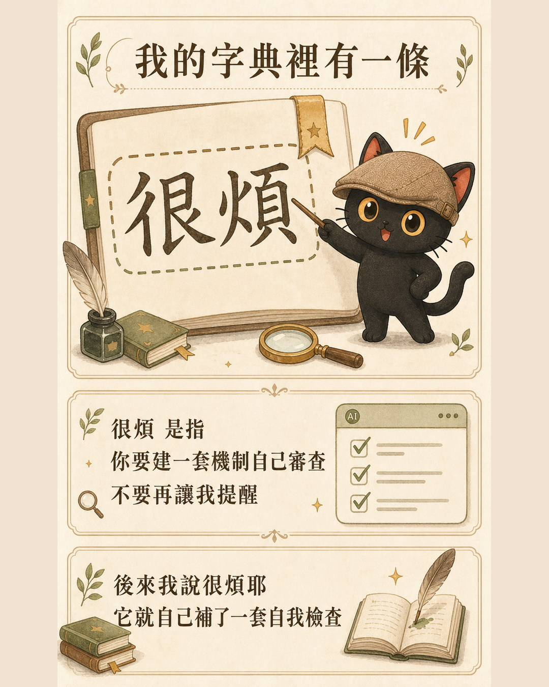
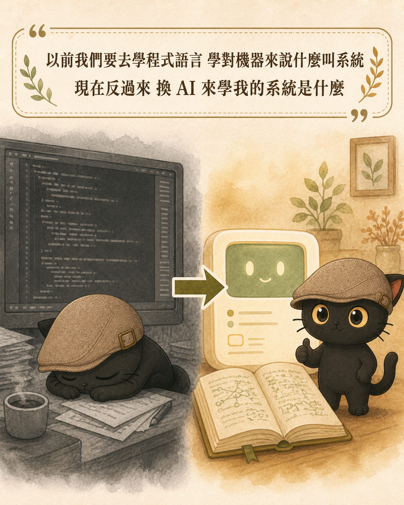

「快一點」到底是多快，「詳細一點」到底是多詳細。這些話我們每天對 AI 講，它每次的理解都不一樣，只好每次重講一遍。這篇講怎麼把這種隨口說的詞，變成 AI 每次都照同一個標準執行的定義。用一個純文字檔就能做，不用寫程式。
- 每天用 AI 工作，常覺得「我明明講了，它就是沒做到」的人
- 已經在寫提示詞，每次開新對話都要重貼一長串設定，覺得很煩的人
- 換一個模型就要把設定重調一次，調到不想換的人
- 一段可直接複製的提示詞，讓 AI 從過去對話撈出你的高頻模糊詞
- 三行寫完的字典條目格式，以及最容易被漏掉的那一行
- 字典寫多了之後的分類、衝突、字數上限怎麼處理（文末問答）
你的「快速」到底是多快
我跟 AI 說「快速幫我做一個網頁」。
它聽懂了每一個字。然後問題來了，我的快速到底是要多快？是十分鐘給我一個能看的版面就好，還是照完整流程做到能上線？是可以先用模擬資料，還是內容要真的？
我說「幫我做很詳細的會議記錄」。
一樣，字全對。而我的很詳細是多詳細？是逐字稿全留，還是三層整理？要不要標出誰說的？要不要把沒講出口的態度也判讀進去？
這些詞在我腦袋裡是有明確定義的。我做過幾十次會議記錄，心裡很清楚「詳細」對我來說長什麼樣子。問題是這個定義從來沒有被寫下來過，它只存在我腦子裡。
所以每次我都要重講一遍。今天講一次，明天換個對話再講一次，換一個模型再講一次。
更麻煩的是第二條路的成本。想靠摸熟每個模型的脾氣來解決，模型三個月改版一次，你剛摸熟它就升級了，而且我們手上通常同時開著好幾家。反過來把我的定義寫下來，這份字典是我的，換誰來讀都一樣，模型改版也不用重寫。
既然講到寫下來，我把我自己那條攤開來給你參考。這是我的「很詳細」用在會議記錄時的完整標準：
詞：很詳細（用在會議記錄時） 我的意思是： · 保留比例＝原逐字稿的 30% 到 50%，以 40% 到 50% 為主 · 第一層 會議摘要：最重要共識、最重要下一步、待辦、 責任分配、時間節點、關鍵數據 · 第二層 洞察與策略：為什麼會這樣談，各方在意什麼 · 第三層 脈絡與細節：討論脈絡、各方立場、共識形成 過程、關鍵轉折，備查用 · 原始逐字稿另存不刪，正文要標出誰說的 反例（這樣不算）：把逐字稿貼上來改錯字就交。 反例（這樣也不算）：只給我第一層的條列摘要。
這條寫下來之後，我說「很詳細」它就知道要交三層、知道保留比例大概在哪、也知道逐字稿不能丟。你的標準跟我的不用一樣，重點是它要能被寫下來、能被照著做。
今天早上真的發生的事
講一個最新的例子，就發生在今天早上，我用它來說明字典生效的時候長什麼樣子。
前一晚我跟 AI 一起做完一件很大的工程。做完之後它沒有寫工作日記，我問它「有寫工作日記了嗎」，它才補寫。
補完之後我跟它說了下面這段話：
收工的時候就要寫工作日記，這個應該就不需要我再講了吧。我記得我寫過這句。做很複雜、有破壞性的工作之前也要先寫，因為這樣做錯了還有工作日記可以查。總是要我提醒你寫工作日記，我覺得很煩耶。
它沒有回我「好的我下次會記得」。它做了三件事。
第一，去查我說的規則到底存不存在。查完發現規則確實寫過，而且寫在三個地方。也就是說規則沒漏寫，是它自己漏做。
第二，往下追一層問「為什麼寫了還是會漏」。答案是那三條規則都只是文字，沒有任何東西在盯著它執行，全靠 AI 自己記得。
第三，它幫自己裝了一個檢查：以後只要這次工作動到重要的東西，收工前沒寫日記，就不准自己結束。
重點在第三件事。它做的不是「答應我下次會記得」，是去建立一個讓自己不可能忘記的機制。
我用的是可以自己加檢查的工具，所以它能做到這一步。如果你用的是 ChatGPT 或 Claude 的網頁版，做不到「自動擋下來」，而同樣的效果有簡單版：在你的字典裡寫一條「每次任務結束前，主動列出這次做了什麼、有沒有漏掉我交代過的事」。它一樣會在每次收尾時自己跑一遍，差別只在於它是自願的，不是被擋的。
「很煩」在我的字典裡是什麼意思
回頭看這件事。我說的是「很煩耶」。這三個字，字面上是情緒。
而在我的系統裡，「很煩」有明確的定義：你應該要建立自己的一套機制，自己去審查，自己跑回去檢查，不要再要我提醒。整個機制要設計好。

它做出來的東西，完全對上這個定義。
這裡有一個關鍵。它之所以做得對，不是靠猜中我的情緒。是因為我的規則檔裡本來就寫著一條「使用者抱怨怎麼講不聽，就主動建議加自動檢查」。那條規則，就是「很煩」這個詞在我的字典裡的定義。
我只講了三個字。字典替我講完了後面那一百個字。
這件事再往上收一層，講的是同一件事：過去我們想讓機器照我們的意思做事，路徑是人去學程式語言，把想法翻譯成機器懂的語法。現在可以換成讓 AI 來學我的系統。你要寫的不是程式碼，是你自己本來就知道的事。

- 提示詞模板為什麼時好時壞？先懂 AI 是強一億倍的手機輸入法 那篇講底層原理，AI 怎麼靠詞語之間的關聯在運作；這篇講原理之上的實作，你要餵給它的那些詞，怎麼先在自己這邊定義清楚
怎麼開始建你自己的字典
先講清楚字典是什麼東西，免得聽起來很玄。
它就是一段純文字。可以是手機備忘錄、記事本、Google 文件、Notion 頁面，隨便什麼你打得開又複製得出來的地方都行。不用寫程式，不用裝任何工具。一開始有三五條就能用。
接下來三個步驟，今天就能做完。
從你過去的對話裡找。那些「我明明講了它沒做到」的地方，就是模糊詞出沒的位置。
詞、我的意思是、反例。三行就夠，不用寫成論文。
貼在對話開頭、放進自訂指令、或存成專案檔案，由簡到繁三選一。
第一步：撈出你的高頻模糊詞
你不需要憑空想。把下面這段複製給你常用的 AI，讓它幫你撈：
請幫我做一件事：回顧我們過去的對話，找出我常用、但每次可能指涉不同標準的形容詞或副詞。 例如「快一點」「詳細一點」「簡單一點」「正式一點」「幫我看一下」這類詞。 請列出最多 10 個，每一個附上： 1. 我實際講過的原句（至少一句） 2. 你當時是怎麼理解的 3. 你當時不確定的地方是什麼 只列出你真的看到我用過的，不要幫我想像。
第三點是重點，也是這段提示詞跟一般「幫我找關鍵字」最不一樣的地方。AI 當時不確定什麼，那個不確定就是你的字典要填的空格。它會告訴你，你以為講清楚了、其實它在猜的地方在哪裡。
第二步：一條三行，寫下定義
一個字典條目不需要寫成論文，三行就夠：
詞：很詳細（用在會議記錄時） 我的意思是：三層整理法，逐字稿保留在附件，正文要標出 誰說的，並且把沒講出口的態度判讀寫在第三層。 反例（這樣不算）：把逐字稿貼上來改錯字就交。
反例那一行最容易被漏掉，也最有用。你講什麼算數，也要講什麼不算數，定義才會收斂。只寫「我要詳細一點」，AI 還是在猜；補一句「這樣不算」，界線就出來了。
第三步：放在 AI 每次都會讀到的地方
寫好的字典要放對位置，AI 才讀得到。三種做法，由簡到繁：
| 做法 | 適合誰 | 怎麼做 |
|---|---|---|
| 貼在對話開頭 | 剛開始試，還在調整定義 | 每次開新對話，先把字典整段貼上去再問問題 |
| 放進自訂指令 | 定義大致穩定了 | ChatGPT 設定裡的自訂指令、Claude 的專案說明，貼進去就每次自動生效 |
| 放進專案檔案 | 字典變長、需要分類 | ChatGPT 的專案、Claude 的 Project 都能上傳檔案，把字典存成一個文字檔傳上去，該專案的每次對話都讀得到 |
從第一種開始就有效，不用一開始就做到第三種。
- 規則檔越寫越長，AI 有照做嗎？：你寫的規則大部分沒在執行 我盤點自己的兩百二十條規則，只有二十四條真的有機制在跑。這篇講怎麼把一個詞定義好，那篇講定義好之後怎麼確認它真的有在跑
常見問題
字典要寫幾條才夠？
三到五條就能開始用。不要一次盤點五十個詞，那會變成一個做不完的專案然後放棄。做法是遇到一次「它又誤會我」就補一條，兩個禮拜之後你會發現常用的就那幾個詞。
字典寫多了要怎麼分類？
字數不多的時候不用分類，一條一條列下去就好。超過大概二十條會開始難找，這時最實用的分法是照「什麼情境用」，例如寫作類、會議類、開發類各一段。不要照詞性或字母排，你找的時候是想到情境，不是想到那個字。
同一個詞在不同情境意思不一樣，會不會打架？
會，而且很常見。「詳細」用在會議記錄跟用在提案簡報是兩回事。解法是在條目的詞後面直接括號寫情境，像前面範例的「很詳細（用在會議記錄時）」。同一個詞可以有好幾條，各自標情境，這樣不算衝突。真正要避免的是同一個情境下有兩個矛盾定義，那種就要挑一個留下。
自訂指令有字數上限，字典塞不下怎麼辦？
字數上限確實會卡。三個處理順序：先把定義寫短（每條的「我的意思是」壓成一句話，細節搬到反例）；再把最常用的五到八條留在自訂指令、其餘搬到專案檔案；還是不夠就依情境拆成幾份，寫作專案放寫作字典，會議專案放會議字典，不要一份通吃。
換一個模型，字典要重寫嗎？
不用。字典寫的是你的定義，不是某個模型的操作方式，整份複製過去就能用。真正需要調整的是放置位置，因為每家的自訂指令、專案功能位置不一樣。這也是建字典比研究模型脾氣划算的地方。
我沒有知識庫，只用 ChatGPT，這套有用嗎？
有用，而且第一步跟第二步完全一樣。差別只在第三步的放置位置，你用前兩種做法（貼在對話開頭、放進自訂指令）就能拿到大部分效果。知識庫是字典長大之後的收納方式，不是入場門檻。
最後
換一個更聰明的模型，解決的是它腦子夠不夠好。而我們每天工作真正卡住的，是它不知道你的標準在哪裡。
標準這件事，工具幫不了你，因為那是你的。你得自己寫下來。
好消息是，這件事只要做一次。你的「很煩」定義好了，之後你就繼續講很煩，剩下的一百個字，字典會替你講。
與其一直研究哪個模型比較聰明，不如建立你自己的字典。
寫好第一條，歡迎丟到社群給我看
字典這件事一個人寫容易卡在「我到底該定義哪些詞」。我在 LINE 社群裡會分享自己的條目，也常有人丟出自己的來討論。近期的免費線上講座也會實際跑一次這個流程。